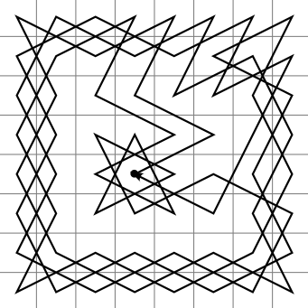

https://en.wikipedia.org/wiki/Knight%27s_tour
Zamknięta ścieżka skoczka szachowego dla planszy 8 × 8.
Obrazek autorstwa Badlydrawnjeff - Praca własna, created using
User:Interiot's Toolserver hack of en.User:Ilmari Karonen's perl script.,
Domena publiczna, https://commons.wikimedia.org/w/index.php?curid=1480166

Problem skoczka szachowego polega na obejściu całej szachownicy w taki sposób, że każde pole będzie odwiedzone dokładnie raz. Możliwe są różne punkty startowe na szachownicy. Dla skoczka istnieje potencjalnie osiem kierunków ruchu do następnej pozycji.
Warto zauważyć, że problem drogi skoczka szachowego jest specjalnym przypadkiem NP-trudnego problemu znajdowania ścieżki lub cyklu Hamiltona w grafie nieskierowanym. Cykl Hamiltona to taki cykl w grafie, w którym każdy wierzchołek grafu odwiedzany jest dokładnie raz (oprócz pierwszego wierzchołka). Analogicznie, ścieżka Hamiltona to taka ścieżka w której każdy wierzchołek odwiedzony jest dokładnie raz.
Okazuje się, problem znalezienia drogi skoczka szachowego jest taką instancją ogólnego problemu, dla której można znaleźć rozwiązanie w czasie wielomianowym. Istnieją algorytmy działające w czasie liniowym względem liczby pól szachownicy O(n^2) [n to bok planszy kwadratowej n × n], które znajdują rozwiązanie problemu.
Ścieżka Hamiltona istnieje dla każdego n większego lub równego 5. Cykl Hamiltona istnieje dla każdego n parzystego większego lub równego 6. Algorytmy znajdujące rozwiązanie zwykle wykorzystują metodę dziel i zwyciężaj, gdzie rozwiązania dla małych planszy są zawczasu przygotowane.
Problem znajdowania zamkniętej ścieżki skoczka może być rozwiązany przy pomocy sztucznej sieci neuronowej (Takefuji, Lee, 1992).
# Problem drogi skoczka na kwadratowej szachownicy o boku N.
# Program znajduje otwarte i zamknięte drogi skoczka.
# Współrzędne planszy x i y mają zakres od 0 do N-1.
def rysuj():
for i in range(N):
print(" ".join("{0:2d}".format(plansza[i,j]) for j in range(N)))
def dopuszczalny(x, y):
return 0 <= x < N and 0 <= y < N and plansza[x, y] == 0
def zapisz(krok, x, y):
plansza[x, y] = krok # zapis ruchu
def wymaz(x, y):
plansza[x, y] = 0 # pole nieodwiedzone
def probuj(krok, x, y):
# krok - nr kolejnego kroku do zrobienia
# x, y - pozycja startowa skoczka
# Funkcja zwraca bool (czy udany ruch).
udany = False
kandydat = 0 # numery od 0 do RUCHY_SKOCZKA-1
while (not udany) and (kandydat < RUCHY_SKOCZKA):
u = x + delta_x[kandydat] # wybieramy kandydata
v = y + delta_y[kandydat]
if dopuszczalny(u, v):
zapisz(krok, u, v)
if krok < N * N: # warunek końca rekurencji
udany = probuj(krok+1, u, v)
if not udany:
wymaz(u, v)
else:
udany = True
kandydat += 1
return udany
N = 5 # bok szachownicy
RUCHY_SKOCZKA = 8
# Inicjalizacja pustej planszy.
plansza = {}
for i in range(N):
for j in range(N):
plansza[i, j] = 0
# . 2 . 1 . kolejne możliwe ruchy skoczka
# 3 . . . 0
# . . x . .
# 4 . . . 7
# . 5 . 6 .
delta_x = [2,1,-1,-2,-2,-1,1,2] # różnica współrzędnej x
delta_y = [1,2,2,1,-1,-2,-2,-1] # różnica współrzędnej y
(x0, y0) = (2, 2) # pole startowe skoczka
zapisz(1, x0, y0)
if probuj(2, x0, y0):
print("Mamy rozwiązanie")
rysuj()
else:
print("Nie istnieje rozwiązanie")
Przykładowe rozwiązania problemu dla planszy 5 × 5.
1 6 15 10 21 Start (0, 0). 14 9 20 5 16 19 2 7 22 11 8 13 24 17 4 25 18 3 12 23
Start (0, 1) - brak rozwiązań.
25 14 1 8 19 Start (0, 2). 4 9 18 13 2 15 24 3 20 7 10 5 22 17 12 23 16 11 6 21
23 10 15 2 25 Start (1, 1). 16 1 24 9 14 11 22 5 18 3 6 17 20 13 8 21 12 7 4 19
Start (1, 2) - brak rozwiązań.
23 10 15 4 25 Start (2, 2). 16 5 24 9 14 11 22 1 18 3 6 17 20 13 8 21 12 7 2 19